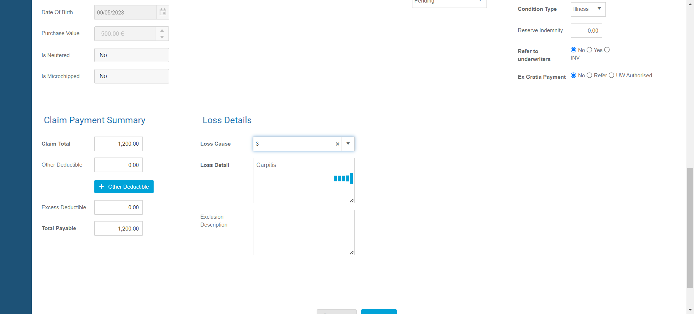
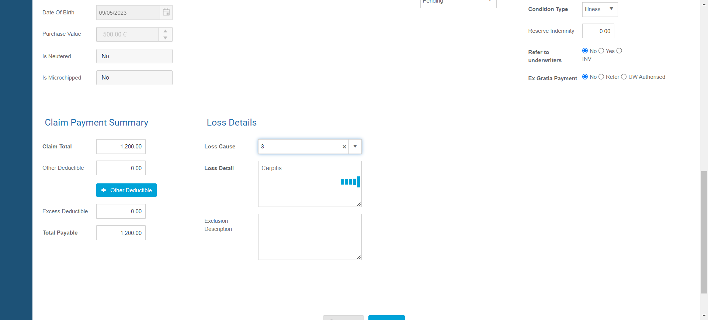

-
Verify Account Module Functionalities
0h 3m 39s+708ms
14:14:26 pmVerify Account Module Functionalities
11.24.2023 14:14:26 11.24.2023 14:18:06 0h 3m 39s+708msAll hyperlinks with icons on account page should workGiven User should log in with username "sa" and password "Good2go@2019" to the admin panelAnd User selects language optionWhen User clicks on account icon on left tool barWhen User clicks on iconThen User will redirect to respected pagehook.hooks.displayUrl(io.cucumber.java.Scenario)https://stage.petcovergroup.com:9999/Filter data of manage bank page upon entering account numberGiven User should log in with username "sa" and password "Good2go@2019" to the admin panelAnd User selects language optionWhen User clicks on account icon on left tool barWhen User clicks on bank iconAnd User enters account number in search box on manage bank pageAnd User clicks on search button on manage bank pageThen Data on manage bank page reflects upon account numberhook.hooks.displayUrl(io.cucumber.java.Scenario)https://stage.petcovergroup.com:9999/Filter data of manage bank page upon entering account numberGiven User should log in with username "sa" and password "Good2go@2019" to the admin panelAnd User selects language optionWhen User clicks on account icon on left tool barWhen User clicks on bank iconAnd User enters client name in search box on manage bank pageAnd User clicks on search button on manage bank pageThen Data on manage bank page reflects upon client namehook.hooks.displayUrl(io.cucumber.java.Scenario)https://stage.petcovergroup.com:9999/Bank Information page displays with details after clicking on bank code link on manage bank detailsGiven User should log in with username "sa" and password "Good2go@2019" to the admin panelAnd User selects language optionWhen User clicks on account icon on left tool barWhen User clicks on bank iconAnd User clicks on bank code link on manage bank pageThen Bank information page displays with detailshook.hooks.displayUrl(io.cucumber.java.Scenario)https://stage.petcovergroup.com:9999/Add Bank page displays will all details when user clicks on add bank icon on manage bank pageGiven User should log in with username "sa" and password "Good2go@2019" to the admin panelAnd User selects language optionWhen User clicks on account icon on left tool barWhen User clicks on bank iconAnd User clicks on add bank icon on manage bank pageThen Add bank page displays with all detailshook.hooks.displayUrl(io.cucumber.java.Scenario)https://stage.petcovergroup.com:9999/Allocate Payment page displays will all details when user clicks on add receipt icon on manage receipt pageGiven User should log in with username "sa" and password "Good2go@2019" to the admin panelAnd User selects language optionWhen User clicks on account icon on left tool barWhen User clicks on manage receipt icon on account pageAnd User clicks on add receipt icon on manage receipt pageThen Allocate Payment page displays with all detailshook.hooks.displayUrl(io.cucumber.java.Scenario)https://stage.petcovergroup.com:9999/hook.hooks.takeScreenShotOnFailure(io.cucumber.java.Scenario) -
Verify Admin Module Features
0h 2m 28s+284ms
14:18:15 pmVerify Admin Module Features
11.24.2023 14:18:15 11.24.2023 14:20:44 0h 2m 28s+284msCheck Letter information on manage letter pageGiven User should log in with username "sa" and password "Good2go@2019" to the admin panelAnd User selects language optionWhen User clicks on administration icon on left tool barAnd User clicks on letter template icon on administration pageThen User will able to see list of existing lettershook.hooks.displayUrl(io.cucumber.java.Scenario)https://stage.petcovergroup.com:9999/To check Edit Letter Template page should open with the template data in editable format.Given User should log in with username "sa" and password "Good2go@2019" to the admin panelAnd User selects language optionWhen User clicks on administration icon on left tool barAnd User clicks on letter template icon on administration pageAnd User clicks on edit icon against letter letter template name in listThen User will redirects to edit letter template pageAnd User will able to edit available fields on pagehook.hooks.displayUrl(io.cucumber.java.Scenario)https://stage.petcovergroup.com:9999/To verify whether View Product page displays with product details with status after by clicking on product code on manage product pageGiven User should log in with username "sa" and password "Good2go@2019" to the admin panelAnd User selects language optionWhen User clicks on administration icon on left tool barWhen User clicks on product icon administration pageAnd User clicks on product code on manage product pageThen View product page displays with all product detailshook.hooks.displayUrl(io.cucumber.java.Scenario)https://stage.petcovergroup.com:9999/To verify if insurer pop up windows displays by clicking on insurer configuration pop up on setting icon on manage product pageGiven User should log in with username "sa" and password "Good2go@2019" to the admin panelAnd User selects language optionWhen User clicks on administration icon on left tool barWhen User clicks on product icon administration pageAnd User clicks on insurer configuration iconThen Insurer configuration displays with all detailshook.hooks.displayUrl(io.cucumber.java.Scenario)https://stage.petcovergroup.com:9999/To verify if agent configuration pop up windows displays by clicking on agent configuration on setting icon on manage product pageGiven User should log in with username "sa" and password "Good2go@2019" to the admin panelAnd User selects language optionWhen User clicks on administration icon on left tool barWhen User clicks on product icon administration pageAnd User clicks on agent configuration iconThen Agent configuration displays with all detailshook.hooks.displayUrl(io.cucumber.java.Scenario)https://stage.petcovergroup.com:9999/Add department page displays will all details when user clicks on add department icon on manage department pageGiven User should log in with username "sa" and password "Good2go@2019" to the admin panelAnd User selects language optionWhen User clicks on administration icon on left tool barWhen User clicks on department icon on administrator pageAnd User clicks on add department icon on manage department pageThen Add department page displays with all detailshook.hooks.displayUrl(io.cucumber.java.Scenario)https://stage.petcovergroup.com:9999/ -
V Verify Approve Claim Module Features
0h 0m 12s+968ms
14:20:50 pmV Verify Approve Claim Module Features
11.24.2023 14:20:50 11.24.2023 14:21:03 0h 0m 12s+968msVerify that the Approve Claim page displays with data in the table after clicking on approve claim icon on dashboard pageGiven User should log in with username "sa" and password "Good2go@2019" to the admin panelAnd User selects language optionWhen User clicks on approve claims icon on left tool barThen User will redirect to page with "Approve Claims" message on itAnd User will able to see data on approve claims pagehook.hooks.displayUrl(io.cucumber.java.Scenario)https://stage.petcovergroup.com:9999/ -
Verify Client Module Features
0h 2m 14s+872ms
14:21:09 pmVerify Client Module Features
11.24.2023 14:21:09 11.24.2023 14:23:24 0h 2m 14s+872msEnsure that the Manage Client page displays list of client data after clicking on client icon on left tool barGiven User should log in with username "sa" and password "Good2go@2019" to the admin panelAnd User selects language optionWhen User clicks on client icon on left tool barThen Manage client page displays with list of clientshook.hooks.displayUrl(io.cucumber.java.Scenario)https://stage.petcovergroup.com:9999/Enter new clientEnter new clientGiven User should log in with username "sa" and password "Good2go@2019" to the admin panelAnd User selects language optionWhen User clicks on client icon on left tool barWhen User clicks on add client icon on manage client pageAnd User enters client details from "client/client.json"And User clicks on create button on add client pageThen View client page appears with the details of currently added clienthook.hooks.displayUrl(io.cucumber.java.Scenario)https://stage.petcovergroup.com:9999/Filter list of client based on active status dropdown option on manage client pageGiven User should log in with username "sa" and password "Good2go@2019" to the admin panelAnd User selects language optionWhen User clicks on client icon on left tool barWhen User selects appropriate option from Active dropdown on manage client pageAnd User clicks on search buttonAnd User clicks on client code on manage client pageThen Client status displays on view client pagehook.hooks.displayUrl(io.cucumber.java.Scenario)https://stage.petcovergroup.com:9999/view client page should displays with all details for each client code link on manage client pageGiven User should log in with username "sa" and password "Good2go@2019" to the admin panelAnd User selects language optionWhen User clicks on client icon on left tool barWhen User clicks on client code link on manage client pageThen View client page displays with all detailshook.hooks.displayUrl(io.cucumber.java.Scenario)https://stage.petcovergroup.com:9999/ -
Verify DashBoard Items
0h 0m 9s+140ms
14:23:32 pmVerify DashBoard Items
11.24.2023 14:23:32 11.24.2023 14:23:41 0h 0m 9s+140msVerify Client,Quote,Policy,Claim details on dash board pageGiven User should log in with username "sa" and password "Good2go@2019" to the admin panelAnd User selects language optionThen Dash board page displays with total and monthly numbers of client,quote,policy and claimhook.hooks.displayUrl(io.cucumber.java.Scenario)https://stage.petcovergroup.com:9999/ -
Launched Page Verification by displayed text
0h 0m 1s+71ms
14:23:46 pmLaunched Page Verification by displayed text
11.24.2023 14:23:46 11.24.2023 14:23:47 0h 0m 1s+71msCheck displayed text on homepageGiven User is one the website login pageWhen User verify admin login page through urlThen User will able to see text "Benutzerkonto anmelden" inside log in formhook.hooks.displayUrl(io.cucumber.java.Scenario)https://stage.petcovergroup.com:9999/ -
Verify Log out functionality
0h 0m 13s+733ms
14:23:55 pmVerify Log out functionality
11.24.2023 14:23:55 11.24.2023 14:24:09 0h 0m 13s+733msVerify log out feature of systemGiven User should log in with username "sa" and password "Good2go@2019" to the admin panelAnd User selects language optionWhen User clicks on Logoff buttonThen User will redirect to login pagehook.hooks.displayUrl(io.cucumber.java.Scenario)https://stage.petcovergroup.com:9999/ -
Login To Admin Panel
0h 0m 12s+162ms
14:24:22 pmLogin To Admin Panel
11.24.2023 14:24:22 11.24.2023 14:24:34 0h 0m 12s+162msVerify Login eventGiven User is one the website login pageAnd User enters username "sa" and password "Good2go@2019" and click signIn buttonAnd User selects language optionThen User will be able to see dashBoardhook.hooks.displayUrl(io.cucumber.java.Scenario)https://stage.petcovergroup.com:9999/ -
Verify Manage Claim Module Features
0h 2m 38s+960ms
14:24:44 pmVerify Manage Claim Module Features
11.24.2023 14:24:44 11.24.2023 14:27:23 0h 2m 38s+960msUser will redirect to manage claims page after clicking on manage claim icon on left tool barGiven User should log in with username "sa" and password "Good2go@2019" to the admin panelAnd User selects language optionWhen User clicks on manage claims icon on left tool barThen User will able see all data available on manage claim pagehook.hooks.displayUrl(io.cucumber.java.Scenario)https://stage.petcovergroup.com:9999/All data under date column displays with dd-mm-yyyy format and data under amount should post fixed by sign on manage claim pageGiven User should log in with username "sa" and password "Good2go@2019" to the admin panelAnd User selects language optionWhen User clicks on manage claims icon on left tool barThen All data under treatment and cliam first advised date column displays in dd-mm-yyyy formatThen All data under Amount paybale column post fixed by signhook.hooks.displayUrl(io.cucumber.java.Scenario)https://stage.petcovergroup.com:9999/User will redirect to respected claim information page by clicking on claim number link on manage claim pageGiven User should log in with username "sa" and password "Good2go@2019" to the admin panelAnd User selects language optionWhen User clicks on manage claims icon on left tool barWhen User clicks on claim number on manage claim pageThen User will redirects to respected claim information pageStep skippedhook.hooks.displayUrl(io.cucumber.java.Scenario)https://stage.petcovergroup.com:9999/hook.hooks.takeScreenShotOnFailure(io.cucumber.java.Scenario) Add claim page displays all dropdowns with valid items and date appears with calender iconGiven User should log in with username "sa" and password "Good2go@2019" to the admin panelAnd User selects language optionWhen User clicks on manage claims icon on left tool barWhen User clicks on add claim buttonThen User will redirect to add claim pageAnd Page has all dropdown with valid list items'hook.hooks.displayUrl(io.cucumber.java.Scenario)https://stage.petcovergroup.com:9999/Add claim for any clientGiven User should log in with username "sa" and password "Good2go@2019" to the admin panelAnd User selects language optionWhen User clicks on manage claims icon on left tool barWhen User clicks on add claim buttonAnd User enters client detailsAnd User enters policy detailsAnd User enters claim detailsAnd User clicks on save buttonhook.hooks.displayUrl(io.cucumber.java.Scenario)https://stage.petcovergroup.com:9999/hook.hooks.takeScreenShotOnFailure(io.cucumber.java.Scenario)
Add claim page displays all dropdowns with valid items and date appears with calender iconGiven User should log in with username "sa" and password "Good2go@2019" to the admin panelAnd User selects language optionWhen User clicks on manage claims icon on left tool barWhen User clicks on add claim buttonThen User will redirect to add claim pageAnd Page has all dropdown with valid list items'hook.hooks.displayUrl(io.cucumber.java.Scenario)https://stage.petcovergroup.com:9999/Add claim for any clientGiven User should log in with username "sa" and password "Good2go@2019" to the admin panelAnd User selects language optionWhen User clicks on manage claims icon on left tool barWhen User clicks on add claim buttonAnd User enters client detailsAnd User enters policy detailsAnd User enters claim detailsAnd User clicks on save buttonhook.hooks.displayUrl(io.cucumber.java.Scenario)https://stage.petcovergroup.com:9999/hook.hooks.takeScreenShotOnFailure(io.cucumber.java.Scenario) -
Verify Policy Module Features
0h 2m 6s+275ms
14:27:33 pmVerify Policy Module Features
11.24.2023 14:27:33 11.24.2023 14:29:40 0h 2m 6s+275msList of policies should display by clicking on policy icon on left tool barGiven User should log in with username "sa" and password "Good2go@2019" to the admin panelAnd User selects language optionWhen User clicks on policy icon on left tool barThen User can see "Manage Policy" message with all policy datahook.hooks.displayUrl(io.cucumber.java.Scenario)https://stage.petcovergroup.com:9999/Verify dates under start date and end date should display with dd-mm-yyyy format on manage policy pageGiven User should log in with username "sa" and password "Good2go@2019" to the admin panelAnd User selects language optionWhen User clicks on policy icon on left tool barThen All data under Start date and And date displays in dd-mm-yyyy formathook.hooks.displayUrl(io.cucumber.java.Scenario)https://stage.petcovergroup.com:9999/Respected policy information should displays by clicking on individual policy number on manage policy pageGiven User should log in with username "sa" and password "Good2go@2019" to the admin panelAnd User selects language optionWhen User clicks on policy icon on left tool barWhen User clicks on policy numberThen User will redirect to policy information pagehook.hooks.displayUrl(io.cucumber.java.Scenario)https://stage.petcovergroup.com:9999/Verify that the user can download the client's policy letterGiven User should log in with username "sa" and password "Good2go@2019" to the admin panelAnd User selects language optionWhen User clicks on policy icon on left tool barWhen User clicks on policy number linkAnd User clicks on letter tab on policy information pageAnd User clicks on download iconThen User will able to see downloaded policy pagehook.hooks.displayUrl(io.cucumber.java.Scenario)https://stage.petcovergroup.com:9999/ -
Verify Quote Module Features
0h 3m 47s+151ms
14:29:46 pmVerify Quote Module Features
11.24.2023 14:29:46 11.24.2023 14:33:33 0h 3m 47s+151msManage Quote page displays with list of quotes by clicking on quote icon on left tool bar.Given User should log in with username "sa" and password "Good2go@2019" to the admin panelAnd User selects language optionWhen User clicks on quote icon on left tool barThen Manage quote page displays with list of quotehook.hooks.displayUrl(io.cucumber.java.Scenario)https://stage.petcovergroup.com:9999/To verify dates under Quote date and Expire date columns displays in dd-mm-yyyy formatGiven User should log in with username "sa" and password "Good2go@2019" to the admin panelAnd User selects language optionWhen User clicks on quote icon on left tool barThen User will able to see all data under quote date and expire date column displays with dd-mm-yyyy formathook.hooks.displayUrl(io.cucumber.java.Scenario)https://stage.petcovergroup.com:9999/One can redirect to add quote page by clicking add quote button on top right corner of manage quoteGiven User should log in with username "sa" and password "Good2go@2019" to the admin panelAnd User selects language optionWhen User clicks on quote icon on left tool barWhen User clicks add quote button on manage quote pageThen User will able to see add quote page with datahook.hooks.displayUrl(io.cucumber.java.Scenario)https://stage.petcovergroup.com:9999/Data under total and monthly premium column should post fixed by signGiven User should log in with username "sa" and password "Good2go@2019" to the admin panelAnd User selects language optionWhen User clicks on quote icon on left tool barThen User will able to see all data under total and monthly premium colum post fixed by signhook.hooks.displayUrl(io.cucumber.java.Scenario)https://stage.petcovergroup.com:9999/On the Add Quote page, verify that the Product dropdown appears with list of productsGiven User should log in with username "sa" and password "Good2go@2019" to the admin panelAnd User selects language optionWhen User clicks on quote icon on left tool barWhen User clicks on add quote buttonThen On add quote page product dropdown will appear with desired listhook.hooks.displayUrl(io.cucumber.java.Scenario)https://stage.petcovergroup.com:9999/Respected quote information page will be displayed upon clicking quote number on manage quote pageGiven User should log in with username "sa" and password "Good2go@2019" to the admin panelAnd User selects language optionWhen User clicks on quote icon on left tool barWhen User clicks on quote number on manage quote pageThen Quote Information page displays with detailshook.hooks.displayUrl(io.cucumber.java.Scenario)https://stage.petcovergroup.com:9999/Fetch list of quote based on product option from product dropdown on manage quote pageGiven User should log in with username "sa" and password "Good2go@2019" to the admin panelAnd User selects language optionWhen User clicks on quote icon on left tool barWhen User selects appropriate option from product dropdown on manage quote pageAnd User clicks on search button on manage quote pageThen Appropriate list of quote will displayhook.hooks.displayUrl(io.cucumber.java.Scenario)https://stage.petcovergroup.com:9999/ -
Verify Report Module Features
0h 3m 32s+291ms
14:33:40 pmVerify Report Module Features
11.24.2023 14:33:40 11.24.2023 14:37:12 0h 3m 32s+291msAll hyperlinks with icons on setting page should workGiven User should log in with username "sa" and password "Good2go@2019" to the admin panelAnd User selects language optionWhen User clicks on reports icon on left tool barThen User will able to see total six section of report categoryhook.hooks.displayUrl(io.cucumber.java.Scenario)https://stage.petcovergroup.com:9999/User will able to redirect on respected report page by clicking on report icon on report pageGiven User should log in with username "sa" and password "Good2go@2019" to the admin panelAnd User selects language optionWhen User clicks on reports icon on left tool barWhen User clicks on reports iconThen Respected report page displayshook.hooks.displayUrl(io.cucumber.java.Scenario)https://stage.petcovergroup.com:9999/Filter quote report information upon option of product drop downGiven User should log in with username "sa" and password "Good2go@2019" to the admin panelAnd User selects language optionWhen User clicks on reports icon on left tool barWhen User clicks on quote report button on report pageAnd User selects any option from product drop down on quote report pageAnd User clicks on search button on quote report pageThen Appropriate data displays on quote report page upon selected option from drop downhook.hooks.displayUrl(io.cucumber.java.Scenario)https://stage.petcovergroup.com:9999/Filter quote report information upon options value of quote status and quote from drop downsGiven User should log in with username "sa" and password "Good2go@2019" to the admin panelAnd User selects language optionWhen User clicks on reports icon on left tool barWhen User clicks on quote report button on report pageAnd User selects any option from quote from and quote status drop down on quote report pageAnd User clicks on search button on quote report pageThen Appropriate data displays on quote report page upon selected options from drop downhook.hooks.displayUrl(io.cucumber.java.Scenario)https://stage.petcovergroup.com:9999/Sorting data on quote report page via quote number and sort directionGiven User should log in with username "sa" and password "Good2go@2019" to the admin panelAnd User selects language optionWhen User clicks on reports icon on left tool barWhen User clicks on quote report button on report pageAnd User selects quote number option from sort by and Ascending option from sort by direction drop down respectivelyAnd User clicks on search button on quote report pageThen All data on quote report page displays in sorting mannerhook.hooks.displayUrl(io.cucumber.java.Scenario)https://stage.petcovergroup.com:9999/Filter policy report information upon option of product drop downGiven User should log in with username "sa" and password "Good2go@2019" to the admin panelAnd User selects language optionWhen User clicks on reports icon on left tool barWhen User clicks on policy summary report button on report pageAnd User selects any option from product drop down on policy summary report pageAnd User clicks on search button on policy summary report pageThen Appropriate data displays on policy summary report page upon selected option from drop downhook.hooks.displayUrl(io.cucumber.java.Scenario)https://stage.petcovergroup.com:9999/Filter policy report information upon option of status drop downGiven User should log in with username "sa" and password "Good2go@2019" to the admin panelAnd User selects language optionWhen User clicks on reports icon on left tool barWhen User clicks on policy summary report button on report pageAnd User selects any option from status drop down on policy summary report pageAnd User clicks on search button on policy summary report pageThen Appropriate data displays on policy summary report page upon selected option from status drop downhook.hooks.displayUrl(io.cucumber.java.Scenario)https://stage.petcovergroup.com:9999/ -
Verify Setting Module Features
0h 8m 53s+146ms
14:37:17 pmVerify Setting Module Features
11.24.2023 14:37:17 11.24.2023 14:46:10 0h 8m 53s+146msAll hyperlinks with icons on setting page should workGiven User should log in with username "sa" and password "Good2go@2019" to the admin panelAnd User selects language optionWhen User clicks on look up values icon on left tool barWhen User clicks on icon on setting pageThen User will able to redirect to respected pagehook.hooks.displayUrl(io.cucumber.java.Scenario)https://stage.petcovergroup.com:9999/To verify whether Manage Policy Type page displays with policy type details by clicking on policy type icon on setting pagehook.hooks.launchBrowser()Given User should log in with username "sa" and password "Good2go@2019" to the admin panelStep skippedAnd User selects language optionStep skippedWhen User clicks on look up values icon on left tool barStep skippedWhen User clicks on policy type icon setting pageStep skippedThen Manage Policy Type page displays with all policy type detailsStep skippedhook.hooks.displayUrl(io.cucumber.java.Scenario)https://stage.petcovergroup.com:9999/hook.hooks.takeScreenShotOnFailure(io.cucumber.java.Scenario)Add policy type page displays will all details when user clicks on add policy type icon on manage policy type pageGiven User should log in with username "sa" and password "Good2go@2019" to the admin panelAnd User selects language optionWhen User clicks on look up values icon on left tool barWhen User clicks on policy type icon setting pageAnd User clicks on add policy type icon on manage policy type pageThen Add policy type page displays with all detailshook.hooks.displayUrl(io.cucumber.java.Scenario)https://stage.petcovergroup.com:9999/Edit policy type page displays upon clicking on edit icon against policy type on manage policy type pageGiven User should log in with username "sa" and password "Good2go@2019" to the admin panelAnd User selects language optionWhen User clicks on look up values icon on left tool barWhen User clicks on policy type icon setting pageAnd User clicks on edit icon against policy type on manage policy type pageThen Edit policy type page displays in editable formathook.hooks.displayUrl(io.cucumber.java.Scenario)https://stage.petcovergroup.com:9999/To verify whether Manage client class page displays with client class details by clicking on client lass icon on setting pageGiven User should log in with username "sa" and password "Good2go@2019" to the admin panelAnd User selects language optionWhen User clicks on look up values icon on left tool barWhen User clicks on client class icon setting pageThen Manage client class page displays with all client class detailshook.hooks.displayUrl(io.cucumber.java.Scenario)https://stage.petcovergroup.com:9999/Add client class page displays will all details when user clicks on add client class icon on manage class client pageGiven User should log in with username "sa" and password "Good2go@2019" to the admin panelAnd User selects language optionWhen User clicks on look up values icon on left tool barWhen User clicks on client class icon setting pageAnd User clicks on add client class icon on manage class client pageThen Add client class page displays with all detailshook.hooks.displayUrl(io.cucumber.java.Scenario)https://stage.petcovergroup.com:9999/Edit client class page displays upon clicking on edit icon against client class icon on manage client class pageGiven User should log in with username "sa" and password "Good2go@2019" to the admin panelAnd User selects language optionWhen User clicks on look up values icon on left tool barWhen User clicks on client class icon setting pageAnd User clicks on edit icon against client class name on manage client class pageThen Edit client class page displays in editable formathook.hooks.displayUrl(io.cucumber.java.Scenario)https://stage.petcovergroup.com:9999/ -
Verify Task Module Features
0h 2m 33s+965ms
14:46:17 pmVerify Task Module Features
11.24.2023 14:46:17 11.24.2023 14:48:51 0h 2m 33s+965msUser will redirect to manage task page after clicking on task icon on left tool barGiven User should log in with username "sa" and password "Good2go@2019" to the admin panelAnd User selects language optionWhen User clicks on task icon on left tool barThen User redirects to "Manage Task" pageAnd User see concern data on manage task pagehook.hooks.displayUrl(io.cucumber.java.Scenario)https://stage.petcovergroup.com:9999/To check whether Assign to dropdown on add task page appears with current user after clicking on add task button on add task pageGiven User should log in with username "sa" and password "Good2go@2019" to the admin panelAnd User selects language optionWhen User clicks on task icon on left tool barWhen user clicks on add task buttonThen User redirects to page with "Add Task" messageAnd Assigned to dropdown appears with initial current userhook.hooks.displayUrl(io.cucumber.java.Scenario)https://stage.petcovergroup.com:9999/Appropriate data should display upon selecting an option from the status drop down on managing task pageGiven User should log in with username "sa" and password "Good2go@2019" to the admin panelAnd User selects language optionWhen User clicks on task icon on left tool barWhen User Selects any option from status dropdown on manage task pageThen Status tage of manage task data displays accordinglyhook.hooks.displayUrl(io.cucumber.java.Scenario)https://stage.petcovergroup.com:9999/Appropriate data should display upon selecting an option from the priority drop down on managing task pageGiven User should log in with username "sa" and password "Good2go@2019" to the admin panelAnd User selects language optionWhen User clicks on task icon on left tool barWhen User Selects any option from priority dropdown on manage task pageThen Data under priority column of task data displays accordinglyhook.hooks.displayUrl(io.cucumber.java.Scenario)https://stage.petcovergroup.com:9999/Appropriate data should display upon selecting an option from the type drop down on managing task pageGiven User should log in with username "sa" and password "Good2go@2019" to the admin panelAnd User selects language optionWhen User clicks on task icon on left tool barWhen User Selects any option from type dropdown on manage task pageThen Data under type column of task data displays accordinglyhook.hooks.displayUrl(io.cucumber.java.Scenario)https://stage.petcovergroup.com:9999/Appropriate data should display upon selecting an option from the client drop down on managing task pageGiven User should log in with username "sa" and password "Good2go@2019" to the admin panelAnd User selects language optionWhen User clicks on task icon on left tool barWhen User Selects any option from client dropdown on manage task pageThen Data under client column of task data displays accordinglyhook.hooks.displayUrl(io.cucumber.java.Scenario)https://stage.petcovergroup.com:9999/To check task details should open after clicking on task title on manage task pageGiven User should log in with username "sa" and password "Good2go@2019" to the admin panelAnd User selects language optionWhen User clicks on task icon on left tool barWhen User clicks on task tile on task manage pageThen Task details window will open with all task detailshook.hooks.displayUrl(io.cucumber.java.Scenario)https://stage.petcovergroup.com:9999/
-
@Sanity
55 tests
51 4@Sanity
51 passed 4 failedStatus Timestamp TestName 14:14:26 pm All hyperlinks with icons on account page should work Verify Account Module Functionalities.All hyperlinks with icons on account page should work14:17:04 pm Bank Information page displays with details after clicking on bank code link on manage bank details Verify Account Module Functionalities.Bank Information page displays with details after clicking on bank code link on manage bank details14:17:25 pm Add Bank page displays will all details when user clicks on add bank icon on manage bank page Verify Account Module Functionalities.Add Bank page displays will all details when user clicks on add bank icon on manage bank page14:17:48 pm Allocate Payment page displays will all details when user clicks on add receipt icon on manage receipt page Verify Account Module Functionalities.Allocate Payment page displays will all details when user clicks on add receipt icon on manage receipt page14:18:15 pm Check Letter information on manage letter page Verify Admin Module Features.Check Letter information on manage letter page14:18:39 pm To check Edit Letter Template page should open with the template data in editable format. Verify Admin Module Features.To check Edit Letter Template page should open with the template data in editable format.14:19:10 pm To verify whether View Product page displays with product details with status after by clicking on product code on manage product page Verify Admin Module Features.To verify whether View Product page displays with product details with status after by clicking on product code on manage product page14:19:38 pm To verify if insurer pop up windows displays by clicking on insurer configuration pop up on setting icon on manage product page Verify Admin Module Features.To verify if insurer pop up windows displays by clicking on insurer configuration pop up on setting icon on manage product page14:20:02 pm To verify if agent configuration pop up windows displays by clicking on agent configuration on setting icon on manage product page Verify Admin Module Features.To verify if agent configuration pop up windows displays by clicking on agent configuration on setting icon on manage product page14:20:26 pm Add department page displays will all details when user clicks on add department icon on manage department page Verify Admin Module Features.Add department page displays will all details when user clicks on add department icon on manage department page14:20:50 pm Verify that the Approve Claim page displays with data in the table after clicking on approve claim icon on dashboard page V Verify Approve Claim Module Features.Verify that the Approve Claim page displays with data in the table after clicking on approve claim icon on dashboard page14:21:09 pm Ensure that the Manage Client page displays list of client data after clicking on client icon on left tool bar Verify Client Module Features.Ensure that the Manage Client page displays list of client data after clicking on client icon on left tool bar14:22:07 pm Filter list of client based on active status dropdown option on manage client page Verify Client Module Features.Filter list of client based on active status dropdown option on manage client page14:22:31 pm view client page should displays with all details for each client code link on manage client page Verify Client Module Features.view client page should displays with all details for each client code link on manage client page14:23:32 pm Verify Client,Quote,Policy,Claim details on dash board page Verify DashBoard Items.Verify Client,Quote,Policy,Claim details on dash board page14:23:46 pm Check displayed text on homepage Launched Page Verification by displayed text.Check displayed text on homepage14:23:55 pm Verify log out feature of system Verify Log out functionality.Verify log out feature of system14:24:22 pm Verify Login event Login To Admin Panel.Verify Login event14:24:44 pm User will redirect to manage claims page after clicking on manage claim icon on left tool bar Verify Manage Claim Module Features.User will redirect to manage claims page after clicking on manage claim icon on left tool bar14:25:04 pm All data under date column displays with dd-mm-yyyy format and data under amount should post fixed by sign on manage claim page Verify Manage Claim Module Features.All data under date column displays with dd-mm-yyyy format and data under amount should post fixed by sign on manage claim page14:25:24 pm User will redirect to respected claim information page by clicking on claim number link on manage claim page Verify Manage Claim Module Features.User will redirect to respected claim information page by clicking on claim number link on manage claim page14:25:47 pm Add claim page displays all dropdowns with valid items and date appears with calender icon Verify Manage Claim Module Features.Add claim page displays all dropdowns with valid items and date appears with calender icon14:26:29 pm Add claim for any client Verify Manage Claim Module Features.Add claim for any client14:27:33 pm List of policies should display by clicking on policy icon on left tool bar Verify Policy Module Features.List of policies should display by clicking on policy icon on left tool bar14:27:54 pm Verify dates under start date and end date should display with dd-mm-yyyy format on manage policy page Verify Policy Module Features.Verify dates under start date and end date should display with dd-mm-yyyy format on manage policy page14:28:18 pm Respected policy information should displays by clicking on individual policy number on manage policy page Verify Policy Module Features.Respected policy information should displays by clicking on individual policy number on manage policy page14:29:06 pm Verify that the user can download the client's policy letter Verify Policy Module Features.Verify that the user can download the client's policy letter14:29:46 pm Manage Quote page displays with list of quotes by clicking on quote icon on left tool bar. Verify Quote Module Features.Manage Quote page displays with list of quotes by clicking on quote icon on left tool bar.14:30:04 pm To verify dates under Quote date and Expire date columns displays in dd-mm-yyyy format Verify Quote Module Features.To verify dates under Quote date and Expire date columns displays in dd-mm-yyyy format14:30:22 pm One can redirect to add quote page by clicking add quote button on top right corner of manage quote Verify Quote Module Features.One can redirect to add quote page by clicking add quote button on top right corner of manage quote14:30:43 pm Data under total and monthly premium column should post fixed by sign Verify Quote Module Features.Data under total and monthly premium column should post fixed by sign14:31:07 pm On the Add Quote page, verify that the Product dropdown appears with list of products Verify Quote Module Features.On the Add Quote page, verify that the Product dropdown appears with list of products14:31:35 pm Respected quote information page will be displayed upon clicking quote number on manage quote page Verify Quote Module Features.Respected quote information page will be displayed upon clicking quote number on manage quote page14:33:17 pm Fetch list of quote based on product option from product dropdown on manage quote page Verify Quote Module Features.Fetch list of quote based on product option from product dropdown on manage quote page14:33:40 pm All hyperlinks with icons on setting page should work Verify Report Module Features.All hyperlinks with icons on setting page should work14:33:57 pm User will able to redirect on respected report page by clicking on report icon on report page Verify Report Module Features.User will able to redirect on respected report page by clicking on report icon on report page14:34:45 pm Filter quote report information upon option of product drop down Verify Report Module Features.Filter quote report information upon option of product drop down14:35:15 pm Filter quote report information upon options value of quote status and quote from drop downs Verify Report Module Features.Filter quote report information upon options value of quote status and quote from drop downs14:35:43 pm Sorting data on quote report page via quote number and sort direction Verify Report Module Features.Sorting data on quote report page via quote number and sort direction14:36:19 pm Filter policy report information upon option of product drop down Verify Report Module Features.Filter policy report information upon option of product drop down14:36:46 pm Filter policy report information upon option of status drop down Verify Report Module Features.Filter policy report information upon option of status drop down14:37:17 pm All hyperlinks with icons on setting page should work Verify Setting Module Features.All hyperlinks with icons on setting page should work14:38:19 pm To verify whether Manage Policy Type page displays with policy type details by clicking on policy type icon on setting page Verify Setting Module Features.To verify whether Manage Policy Type page displays with policy type details by clicking on policy type icon on setting page14:44:28 pm Add policy type page displays will all details when user clicks on add policy type icon on manage policy type page Verify Setting Module Features.Add policy type page displays will all details when user clicks on add policy type icon on manage policy type page14:44:48 pm Edit policy type page displays upon clicking on edit icon against policy type on manage policy type page Verify Setting Module Features.Edit policy type page displays upon clicking on edit icon against policy type on manage policy type page14:45:11 pm To verify whether Manage client class page displays with client class details by clicking on client lass icon on setting page Verify Setting Module Features.To verify whether Manage client class page displays with client class details by clicking on client lass icon on setting page14:45:29 pm Add client class page displays will all details when user clicks on add client class icon on manage class client page Verify Setting Module Features.Add client class page displays will all details when user clicks on add client class icon on manage class client page14:45:51 pm Edit client class page displays upon clicking on edit icon against client class icon on manage client class page Verify Setting Module Features.Edit client class page displays upon clicking on edit icon against client class icon on manage client class page14:46:17 pm User will redirect to manage task page after clicking on task icon on left tool bar Verify Task Module Features.User will redirect to manage task page after clicking on task icon on left tool bar14:46:34 pm To check whether Assign to dropdown on add task page appears with current user after clicking on add task button on add task page Verify Task Module Features.To check whether Assign to dropdown on add task page appears with current user after clicking on add task button on add task page14:46:57 pm Appropriate data should display upon selecting an option from the status drop down on managing task page Verify Task Module Features.Appropriate data should display upon selecting an option from the status drop down on managing task page14:47:25 pm Appropriate data should display upon selecting an option from the priority drop down on managing task page Verify Task Module Features.Appropriate data should display upon selecting an option from the priority drop down on managing task page14:47:52 pm Appropriate data should display upon selecting an option from the type drop down on managing task page Verify Task Module Features.Appropriate data should display upon selecting an option from the type drop down on managing task page14:48:13 pm Appropriate data should display upon selecting an option from the client drop down on managing task page Verify Task Module Features.Appropriate data should display upon selecting an option from the client drop down on managing task page14:48:39 pm To check task details should open after clicking on task title on manage task page Verify Task Module Features.To check task details should open after clicking on task title on manage task page -
@Stage
1 tests
1@Stage
1 passedStatus Timestamp TestName 14:16:06 pm Filter data of manage bank page upon entering account number Verify Account Module Functionalities.Filter data of manage bank page upon entering account number
-
org.openqa.selenium.NoSuchElementException
2 tests
org.openqa.selenium.NoSuchElementException
Status Timestamp TestName 14:18:05 pm Then Allocate Payment page displays with all details Allocate Payment page displays will all details when user clicks on add receipt icon on manage receipt page14:25:35 pm When User clicks on claim number on manage claim page User will redirect to respected claim information page by clicking on claim number link on manage claim page -
org.openqa.selenium.ElementClickInterceptedException
1 tests
org.openqa.selenium.ElementClickInterceptedException
Status Timestamp TestName 14:27:22 pm And User clicks on save button Add claim for any client -
org.openqa.selenium.TimeoutException
2 tests
org.openqa.selenium.TimeoutException
Status Timestamp TestName 14:38:19 pm hook.hooks.launchBrowser() To verify whether Manage Policy Type page displays with policy type details by clicking on policy type icon on setting page14:41:20 pm hook.hooks.takeScreenShotOnFailure(io.cucumber.java.Scenario) To verify whether Manage Policy Type page displays with policy type details by clicking on policy type icon on setting page
Features
Scenarios
Steps
Features
14
78.57%Scenarios
58
93.10%Start
Nov 24, 2023 02:14:17 pm
Duration
0h 34m 33s+717ms
Timeline
Tags
| Name | Passed | Failed | Skipped | Others | Passed % |
|---|---|---|---|---|---|
| @Sanity | 51 | 4 | 0 | 0 | 92.727% |
| @Stage | 1 | 0 | 0 | 0 | 100% |
Environment
| Name | Value |
|---|---|
| Build | 1.1 |
| AppName | Austria |
| Environment | https://fitlocal.petcover.at:91 |
| User | Qa-Prowerse |
| Os | Window |